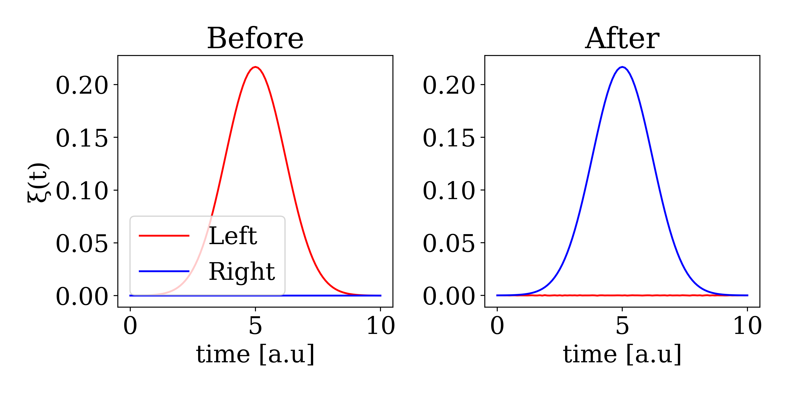

Two Waveguides
In the previous examples, we have only considered cases with a single waveguide. In this toturial, we show how to model a beamsplitter and an optical switch using two waveguides. A beamsplitter or a swap gate can be modelled using the Hamiltonian $H = V(w_a^\dagger w_b + w_b^\dagger w_a)$ where V is some interaction strength that determines which interaction is moddeled (we will discuss this in detail later). $w_a$ and $w_b$ is the annihilation operators of the two waveguides. We can describe the state of two waveguides with a total of N excitations as:
times = 0:0.1:10
N = 2
bw_twophotons = LeftRightWaveguideBasis(N,times)When creating operators, we now have to specify which waveguide they are acting on (Left or Right). The equivalent of create and destroy is then:
wdL = leftcreate(bw)
wL = leftdestroy(bw)
wdR = rightcreate(bw)
wR = rightdestroy(bw)Similarly, initializing one or two photon states in the left or right waveguide is done by:
ξ(t,σ,t0) = sqrt(2/σ)* (log(2)/pi)^(1/4)*exp(-2*log(2)*(t-t0)^2/σ^2)
ξ2(t1,t2,σ,t0) = ξ(t1,σ,t0)*ξ(t2,σ,t0)
ψ_single_left = onephoton(bw,:Left,ξ,times,2,5)
ψ_double_left = twophoton(bw,:Left,ξ2,times,2,5)
ψ_single_right = onephoton(bw,:Right,ξ,times,2,5)
ψ_double_right = twophoton(bw,:Right,ξ2,times,2,5)If we want to describe a simultanous excitation in both waveguides (states like $\ket{1_i}_\mathrm{left}\ket{1_j }_\mathrm{right}$) we specify :LeftRight:
ψ_double_left_right = twophoton(bw,:LeftRight,ξ2,times,2,5)Beamsplitter
Let's now treat the same example as in Interference on Beamsplitter. We consider the two waveguides in a identic single photon state and thus use the above defined ψ_double_left_right. The Hamiltonian governing a beamsplitter in the time binned formalism has $V= \pi/4$:
V = pi/4
H = im*V/dt*(wdR*wL - wdL*wR)We can then evolve the system under this Hamiltonian to perform the beamsplitting operation:
psi_out = waveguide_evolution(times,ψ_double_left_right,H)We can then view the final state to verify that we only have twophotons in the same waveguide simultanoues:
psi_R = TwoPhotonView(psi_out,type=:Right)
psi_L = TwoPhotonView(psi_out,type=:Left)
psi_LR = TwoPhotonView(psi_out,type=:LeftRight)
julia> norm(psi_R)^2
julia> norm(psi_L)^2
julia> norm(psi_LR)^2
0.49999981822067935
0.49999981822067935
8.736388404016349e-7Except for numerical errors we thus have 50% chance of observing both photons in the same waveguide and 0 (8.736388404016349e-9)% of observing both photons in each of the waveguide simultanoues.
Swap
If we instead choose $V = \pi / 2$ we get the SWAP operation. Let us consider on photons in the left waveguide and swap them to right waveguide and plot before and after:
V = pi/2
H = im*V/dt*(wdR*wL - wdL*wR)
psi_out_swap = waveguide_evolution(times,ψ_single_left,H)
Left_before = OnePhotonView(ψ_single_left,type=:Left)
Right_before = OnePhotonView(ψ_single_left,type=:Right)
Left_after = OnePhotonView(psi_out_swap,type=:Left)
Right_after = OnePhotonView(psi_out_swap,type=:Right)
fig,ax = subplots(1,2,figsize=(9,4.5))
ax[1].plot(times,Left_before,"r-",label="Left")
ax[1].plot(times,Right_before,"b-",label="Right")
ax[2].plot(times,Left_after,"r-")
ax[2].plot(times,Right_after,"b-")
ax[1].legend(loc="lower left")
ax[1].set_title("Before")
ax[1].set_xlabel("time [a.u]")
ax[1].set_ylabel("ξ(t)")
ax[2].set_title("After")
ax[2].set_xlabel("time [a.u]")
plt.tight_layout()
Instead of using the custom basis for handling two waveguides, one could instead just do a tensor product between two waveguides basises. This naive approach would look something like:
times = 0:0.1:10
bw = WaveguideBasis(2,times)
Btotal = bw ⊗ bwThis might work if you only consider single photon excitations in the waveguides, but if you go consider two photon excitations the hilbert space blows up. Indeed in the above example the hilbert space is of size: 27594009!!! However, since we often know that the system in total only has two excitations, there is no possibility of having two photons in both waveguides simultanously (states of type: $\ket{1_k,1_j}_{left}\ket{1_l,1_m}_{right}$). This part of the Hilber space takes up the majority since it scales as $\propto N^4$ where N is the number of timebins. Instead we can exploit that only a total of two excitations is present simultanosly in the system. For this we use the custom basis LeftRightWaveguideBasis where we only store states with up to two photons (that is states of type $\ket{1_k,1_j}_{\mathrm{left}}\ket{\emptyset}_{\mathrm{right}}$, $\ket{\emptyset}_{\mathrm{left}}\ket{1_k,1_j}_{\mathrm{right}}$, and $\ket{1_k}_{\mathrm{left}}\ket{1_j}_{\mathrm{right}}$). Here we denote one of the waveguides as "left" and the other as right "right". In reality, their geometrical relation is determined by the given Hamiltonian and "left/right" is just one way of distinquishing the two waveguides. The LeftRightWaveguideBasis can be initilized similarly to the WaveguideBasis as:
bw = LeftRightWaveguideBasis(2,times)The hilbert space is now of size: 20706, this is of course still large Hilbert space, but 3 orders of magnitude smaller than the naive approach.